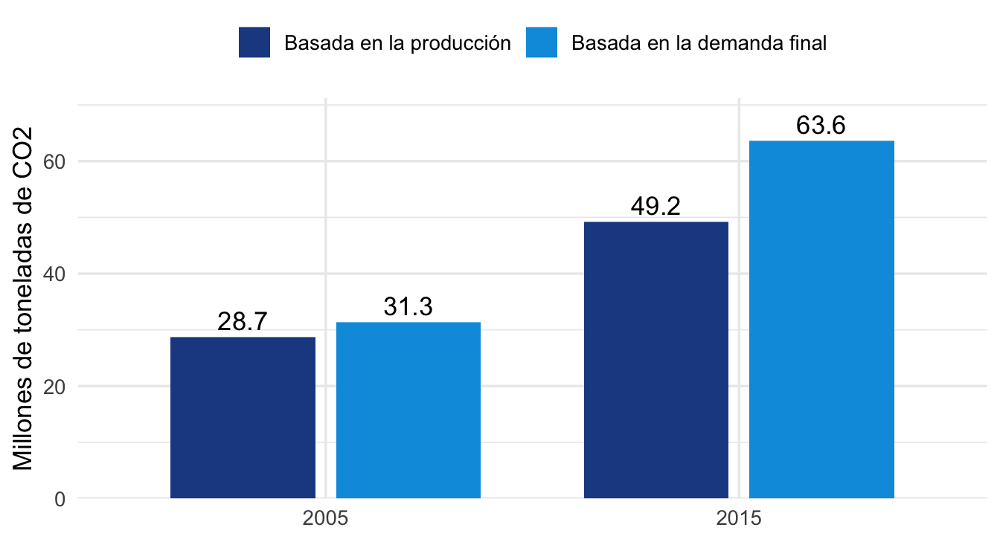
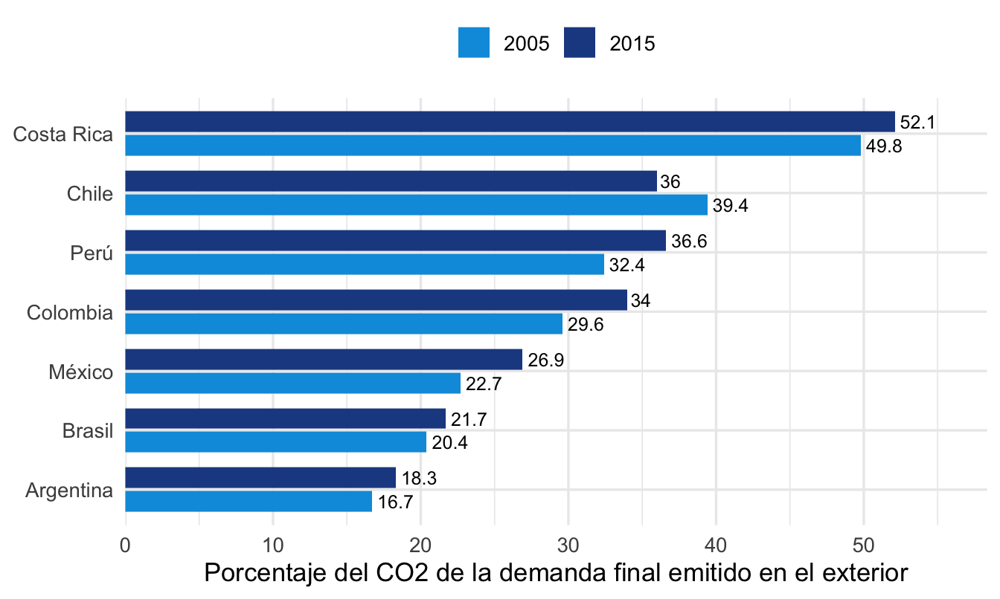

Huellas de carbono nacionales: concepto, método y experiencias internacionales
Una nota de contexto para oficinas de estadística
Resumen
Las huellas de carbono nacionales miden las emisiones que provoca la demanda final de un país, sin importar dónde ocurren. Esta nota explica el concepto, describe el método de insumo-producto ambientalmente extendido que las sustenta y revisa la evidencia global y las experiencias de oficinas de estadística, organismos internacionales e investigadores, con atención a América Latina. Concluye con los problemas habituales de compilación y con las decisiones de diseño que enfrenta una oficina que inicia el trabajo. Un anexo resume el contexto de la asistencia técnica a Perú que motivó el documento.
1 Introducción
Los compromisos internacionales de mitigación se miden, en general, con inventarios de emisiones que registran lo que ocurre dentro del territorio de cada país (Eurostat, 2015). Ese enfoque tiene ventajas claras: se apoya en estadísticas de combustibles y en metodologías acordadas, y permite verificar el cumplimiento de metas. Deja fuera, sin embargo, una pregunta que cobra importancia en el debate de política: cuántas emisiones se generan para sostener el consumo de un país, incluidas las que ocurren en otros países que producen los bienes que ese país importa.
La magnitud de esa diferencia es considerable. Estudios de referencia estiman que entre una quinta parte y algo más de una cuarta parte de las emisiones mundiales de CO2 se asocia con bienes que cruzan fronteras (Davis y Caldeira, 2010; Peters et al., 2011; Yamano y Guilhoto, 2020). La distinción también tiene consecuencias para el diseño de políticas. Cuando los países con metas ambiciosas reducen sus emisiones territoriales, parte de la reducción puede reflejar el traslado de producción a economías con tecnologías más intensivas en carbono, de modo que las emisiones regresan al consumo del país en forma de importaciones (Yamano y Guilhoto, 2020). El debate sobre qué parte de la carga de mitigación corresponde a cada país, que se remonta al principio de responsabilidades comunes pero diferenciadas del Protocolo de Kioto, depende en buena medida de cómo se asignen las emisiones (Yamano y Guilhoto, 2020).
La huella de carbono nacional responde a esa pregunta. Es una estadística que asigna a la demanda final de los residentes de un país las emisiones generadas en toda la cadena de producción, dentro y fuera de su territorio. Varias oficinas de estadística y organismos internacionales la publican de forma regular, entre ellos el Departamento de Medio Ambiente del Reino Unido y Eurostat (Department for Environment, Food and Rural Affairs, 2026; Eurostat, 2026). Su cálculo descansa en las cuentas de emisiones atmosféricas del Marco Central del SEEA, que comparten la estructura de los cuadros de oferta y utilización de las cuentas nacionales y pueden, por tanto, combinarse con ellos en un modelo de insumo-producto (Eurostat, 2015; United Nations, 2014).
Esta nota ofrece una introducción al tema para quienes compilan o utilizan estas estadísticas. La sección 2 aclara el concepto y lo distingue de otros usos del término. La sección 3 describe el método, y la sección 4 resume los usos de política. La sección 5 presenta la evidencia global y la posición de América Latina, y la sección 6 revisa las experiencias de oficinas de estadística, de bases de datos multirregionales y de estudios latinoamericanos. La sección 7 reúne las consideraciones de diseño. El documento se limita a la huella nacional basada en la demanda final; las huellas de producto y de organización se mencionan solo para evitar confusiones. Un anexo describe el contexto de la asistencia técnica del FMI al Instituto Nacional de Estadística e Informática (INEI) de Perú, que motivó la preparación de esta nota.
2 El concepto de huella de carbono
2.1 Un término con varios significados
La expresión huella de carbono se usa con sentidos distintos y no existe una definición de aceptación general (Espíndola y Valderrama, 2012). En el ámbito empresarial predominan las huellas de producto y de organización. Se calculan con métodos de abajo hacia arriba, como el análisis de ciclo de vida, y siguen referencias como el GHG Protocol, la especificación PAS 2050 o las normas ISO 14040 y 14044 (Espíndola y Valderrama, 2012; Frohmann y Olmos, 2013). Una empresa que mide las emisiones de su producción, o de un producto a lo largo de su vida útil, produce una huella de este tipo.
Las estadísticas oficiales usan el término con otro sentido. El Reino Unido, que publica una serie oficial desde 2012, define su huella como las emisiones de gases de efecto invernadero asociadas con el gasto de consumo de los residentes, en cualquier lugar del mundo donde ocurran a lo largo de la cadena de suministro, más las emisiones directas de los hogares por el uso de combustibles (Department for Environment, Food and Rural Affairs, 2026). El manual de Eurostat describe la misma perspectiva como cuentas de emisiones basadas en el consumo, que resultan de un modelo y se conocen también como huellas de carbono (Eurostat, 2015, sec. 8). Ese es el sentido que se adopta en esta nota.
2.2 Tres formas de asignar las emisiones
Para entender qué mide la huella conviene situarla frente a otras dos formas de contar las emisiones. La OCDE distingue tres enfoques de asignación (Yamano y Guilhoto, 2020), que resume el Cuadro 1. El primero es el territorial, propio de los inventarios que los países reportan a la Convención Marco de las Naciones Unidas sobre el Cambio Climático (CMNUCC) y de las estadísticas de la Agencia Internacional de Energía (AIE). El segundo es el de producción, o de residencia, que sigue la lógica de las cuentas nacionales y se aplica en las cuentas de emisiones atmosféricas. El tercero es el de demanda final, que corresponde a la huella.
| Enfoque | Qué cuenta | Fuentes típicas | Pregunta que responde |
|---|---|---|---|
| Territorial | Combustibles comprados y quemados en el territorio, incluidos los de no residentes | Inventarios de la CMNUCC y estadísticas de la AIE | ¿Cuánto se emite dentro de las fronteras? |
| Producción (residencia) | Emisiones de industrias y hogares residentes, dentro y fuera del territorio | Cuentas de emisiones atmosféricas (SEEA) | ¿Qué actividades económicas emiten? |
| Demanda final (huella) | Emisiones de todas las etapas de producción asociadas con la demanda final de los residentes | Cuentas de emisiones y tablas de insumo-producto | ¿Qué consumo, inversión o exportación provoca las emisiones? |
Los tres enfoques son consistentes entre sí. A escala mundial, las emisiones basadas en la demanda y las basadas en la producción suman lo mismo; la diferencia aparece entre países, como resultado del comercio (Yamano y Guilhoto, 2020). Un país cuyo consumo depende de bienes importados intensivos en emisiones tendrá una huella mayor que sus emisiones de producción, y lo contrario ocurre en un país exportador de esos bienes.
2.3 Territorio y residencia
La diferencia entre el primer y el segundo enfoque merece atención, porque es la que más ajustes exige al compilar. Las cuentas de emisiones atmosféricas registran las emisiones de las unidades residentes de una economía, sin importar dónde ocurren, con el mismo criterio de residencia de las cuentas nacionales. Los inventarios de la CMNUCC, en cambio, siguen el principio territorial y registran lo emitido en el territorio, sin importar quién lo emite (Eurostat, 2015, párr. 3 y 37).
El manual de Eurostat ilustra la diferencia con una aerolínea residente en Irlanda: las emisiones de uno de sus vuelos entre Fráncfort y Nueva York se registran en la cuenta irlandesa, porque la utilidad del vuelo contribuye al producto interno bruto de Irlanda (Eurostat, 2015, párr. 35). Lo mismo vale para embarcaciones pesqueras, camiones de carga y turistas que conducen vehículos en el extranjero: las cuentas asignan las emisiones al operador del vehículo y a su país de residencia (Eurostat, 2015, párr. 40). En economías pequeñas, con mucho tránsito internacional, las diferencias entre ambos criterios pueden ser grandes en relación con los totales nacionales (Eurostat, 2015, párr. 36).
Los compiladores hacen explícita la conciliación entre ambos criterios mediante las llamadas partidas puente, que muestran las diferencias entre el total de la cuenta y el total del inventario. El transporte internacional es la fuente principal de esas diferencias (Eurostat, 2015, párr. 39).
NotaFigura pendiente de captura
Insertar la Figura 3 del manual de Eurostat (2015), “Geographic and economic (resident) definition of a country”, en la sección 2.2.2. Ilustra con una elipse la diferencia entre residencia (cuentas) y territorio (inventarios).
2.4 Gases y unidad de medida
Las cuentas cubren seis gases de efecto invernadero: CO2, N2O, CH4, HFC, PFC y SF6, con el NF3 incorporado recientemente al reporte. Se expresan en CO2 equivalente mediante potenciales de calentamiento global (Eurostat, 2015, sec. 3.1). Algunas fuentes, como la serie de la OCDE que se usa en la sección 5, incluyen solo el CO2 por combustión de combustibles fósiles (Yamano y Guilhoto, 2020). La diferencia importa en economías donde la agricultura o el cambio de uso de suelo pesan mucho en las emisiones totales, porque esas fuentes quedan fuera de las series de combustión.
3 Metodología
3.1 Datos necesarios
El cálculo de una huella nacional combina tres insumos: tablas de insumo-producto, que pueden derivarse de los cuadros de oferta y utilización; medidas de las emisiones directas; y cuentas de emisiones atmosféricas, que asignan las emisiones a las actividades económicas con las mismas clasificaciones de las cuentas nacionales. Estas últimas siguen las estructuras y los principios del Marco Central del SEEA y son coherentes con los datos monetarios del Sistema de Cuentas Nacionales (United Nations, 2009, 2014).
Esa coherencia es lo que vuelve posible el modelo: como las cuentas físicas y los cuadros monetarios comparten clasificaciones, las emisiones por industria pueden vincularse directamente con el producto de cada industria. La cuenta debe además tener el desglose completo por actividad económica (en Eurostat, la lista A*64 de la NACE); sin él, las huellas y las descomposiciones no son posibles o pierden valor (Eurostat, 2015, párr. 118).
3.2 Cálculo
La idea del cálculo es sencilla. Cada industria emite una cantidad conocida por unidad de producto, pero para producir un bien necesita insumos de otras industrias, que a su vez emiten y necesitan insumos. El modelo de insumo-producto suma todas esas rondas de producción, y por eso la huella de un producto incluye las emisiones de sus proveedores directos e indirectos (Miller y Blair, 2022). Sea \(\boldsymbol{\varepsilon}\) el vector de coeficientes de emisión por industria (emisiones directas divididas entre el producto bruto), \(\mathbf{T}\) la matriz de requerimientos totales del modelo de producto por industria y \(\mathbf{f}\) el vector de demanda final por producto. La huella de la demanda final es:
\[ F = \boldsymbol{\varepsilon}'\,\mathbf{T}\,\mathbf{f} + e_h \]
donde \(e_h\) son las emisiones directas de los hogares, como el uso de combustibles para transporte y cocción. La OCDE usa una expresión equivalente, \(C = \mathbf{eB}\,\mathbf{Y} + HE\), con la inversa de Leontief de una tabla multirregional (Yamano y Guilhoto, 2020, ecuación 7a).
Un ejemplo del manual de Eurostat aclara la lógica de la asignación. En una economía hipotética sin comercio exterior, el total emitido por las industrias coincidiría con el total asociado con la demanda final. Aun así, las emisiones de la industria A no coincidirían con las emisiones asociadas con el uso final del producto A, porque parte de la producción de A es insumo de otros productos y porque producir A requiere insumos de otras industrias (Eurostat, 2015, párr. 332). La huella reasigna las emisiones desde donde se producen hacia el uso final que las origina.
Al descomponer \(\mathbf{f}\) por producto y por categoría de uso final (consumo de los hogares, consumo del gobierno, formación bruta de capital y exportaciones) se obtienen las dimensiones de análisis habituales (Eurostat, 2015, párr. 337). Incluir la formación de capital es importante: en el análisis global de Hertwich y Peters (2009), los hogares explican 72% de la huella de gases de efecto invernadero, el gobierno 10% y la inversión 18% (según el resumen del artículo). En una economía abierta, el total asociado con toda la demanda final, exportaciones incluidas, coincide con las emisiones de producción cuando se contabilizan por completo las emisiones incorporadas en las importaciones (Eurostat, 2015, párr. 338).
3.3 Tratamiento de las importaciones
La decisión metodológica más delicada es cómo estimar las emisiones incorporadas en las importaciones. Cuando no se dispone de una tabla multirregional, se usa la tabla nacional como aproximación; esto supone que los bienes importados se producen con la tecnología del país, el llamado supuesto de tecnología doméstica. Con ese supuesto el resultado debe interpretarse con cautela, porque no mide las emisiones reales de los países proveedores: mide las que se evitarían en el país si este produjera las importaciones por sí mismo (Eurostat, 2015, párr. 335 y 336).
Una tabla multirregional resuelve ese límite, porque representa las entregas intermedias y finales entre países y permite vincular el uso final en un país con los insumos y las emisiones de todos los países de la cadena. Su construcción, no obstante, exige muchos datos (Eurostat, 2015, párr. 334). Por eso la mayoría de las oficinas que publican huellas combinan sus cuadros nacionales con una base multirregional externa, como se verá en la sección 6.
3.4 Problemas habituales de compilación
Las experiencias revisadas en este documento coinciden en un conjunto de dificultades recurrentes, que resume el Cuadro 2. Muchas de ellas son de naturaleza estadística y no de modelación: provienen de la correspondencia entre clasificaciones y de la coherencia temporal de las fuentes.
| Problema | Descripción | Evidencia |
|---|---|---|
| Concordancias | Hay que mapear inventarios, cuentas nacionales, encuestas y bases multirregionales; por ejemplo, de los 34 flujos de combustión de la AIE, 11 se relacionan con varias industrias del modelo | Yamano y Guilhoto (2020); Hernández (2021); Cachola y Pacca (2021) |
| Residencia | El transporte internacional, la pesca y el turismo exigen ajustes con fuentes externas | Eurostat (2015) |
| Importaciones | Supuesto de tecnología doméstica frente a base multirregional | Eurostat (2015) |
| Valoración | Precios de comprador y precios básicos; márgenes de comercio y transporte; un único tipo de cambio por sector | Owen (2026) |
| Años de referencia | Tablas, inventarios y encuestas de años distintos | Renner (2018); Owen (2026) |
| Alcance de gases | Inclusión o exclusión del cambio de uso de suelo y de los gases distintos del CO2 | Yamano y Guilhoto (2020); Owen (2026) |
| Revisiones y rezago | Las series se revisan en cada edición y se publican con varios años de rezago | Owen (2026) |
| Gasto de hogares | Escalar la encuesta de gasto a los totales de las cuentas nacionales sigue siendo un tema abierto | Malerba et al. (2024) |
4 Usos de política
La principal ventaja de la huella frente a los inventarios es que permite analizar el efecto ambiental del patrón de consumo y de producción. El manual de Eurostat distingue una perspectiva de producción, que compara el desempeño ambiental de las industrias, y una de consumo, que examina las emisiones directas e indirectas a lo largo de las cadenas internacionales de los productos consumidos y compara las categorías de demanda final (Eurostat, 2015, párr. 307). Con ella pueden ordenarse los grupos de productos según sus emisiones incorporadas, o medirse cuántas emisiones indirectas activan el consumo, la inversión y, en particular, las exportaciones (Eurostat, 2015, párr. 337).
La huella también permite medir la productividad del carbono desde la demanda, es decir, el producto interno bruto real generado por unidad de CO2 asociada con la demanda final, una variante de los indicadores de crecimiento verde de la OCDE (Yamano y Guilhoto, 2020). Combinada con descomposiciones estructurales, separa los cambios de intensidad de emisiones de cada industria, de tecnología y de estructura de la demanda (Eurostat, 2015, párr. 308). Entre los hallazgos analíticos, Hertwich y Peters (2009) encuentran que la alimentación, la vivienda y la movilidad son las categorías de mayor peso en la huella de los hogares (20%, 19% y 17% respectivamente, según el resumen del artículo).
Para la política comercial y climática, la comparación entre emisiones de producción y de consumo es la herramienta más apropiada para evaluar la fuga de carbono, es decir, el traslado de producción intensiva en emisiones a otros países. Los países con metas ambiciosas pueden desacoplar sus emisiones de producción del crecimiento mediante el traslado de producción al exterior, mientras parte de esas emisiones regresa en forma de importaciones intensivas en carbono (Yamano y Guilhoto, 2020).
5 Evidencia global y posición de América Latina
5.1 Cifras globales
Tres estudios de referencia, con bases y años distintos, cuantifican la parte de las emisiones ligada al comercio (Cuadro 3). Las cifras no forman una serie homogénea y no deben compararse como tal, pero coinciden en el orden de magnitud y en la tendencia creciente.
| Estudio | Año | Resultado | Base de datos |
|---|---|---|---|
| Davis y Caldeira (2010) | 2004 | 6.2 Gt de CO2, 23% de las emisiones fósiles, se emitieron en la producción de bienes consumidos en otro país | GTAP v7, 113 países o regiones, 57 sectores |
| Peters et al. (2011) | 1990 y 2008 | Emisiones incorporadas en bienes comerciados: 4.3 Gt (20%) en 1990 y 7.8 Gt (26%) en 2008; la transferencia neta de países en desarrollo a desarrollados pasó de 0.4 a 1.6 Gt | 113 países, 57 sectores |
| Yamano y Guilhoto (2020) | 2015 | 8.8 Gt, cerca de 27% del CO2 de combustión, ligado al comercio internacional | ICIO de la OCDE, 65 economías |
Los resultados de la OCDE añaden detalle sectorial y por grupo de países. Siete grupos de industrias explican cerca de dos tercios del CO2 incorporado en las exportaciones de 2015, con los productos químicos y minerales no metálicos (18.2%) y los metales básicos (16.1%) a la cabeza (Yamano y Guilhoto, 2020). Entre los países miembros de la OCDE, las emisiones de producción cayeron 9% entre 2005 y 2015 y las basadas en el consumo, 11%; entre las economías no miembros subieron 47% y 61%, respectivamente (Yamano y Guilhoto, 2020).
NotaFigura pendiente de captura
Insertar la Figura 2.1 de Yamano y Guilhoto (2020, p. 13), “Emissions embodied in trade and final demand”, que muestra las tres etapas de producción (sector emisor, productor intermedio y productor final) y la diferencia entre emisiones por demanda final y por comercio bruto.
5.2 América Latina en las cifras de la OCDE
La misma fuente permite situar a los países latinoamericanos incluidos en la base ICIO. Perú sirve de ejemplo de lo que muestran los datos. En 2015, el CO2 de combustión asociado con su demanda final sumó 63.6 Mt, frente a 49.2 Mt emitidos por la producción residente. La diferencia, 14.4 Mt, es el saldo neto de emisiones importadas; en 2005 fue de 2.6 Mt. Entre 2005 y 2015 la producción creció 71% y la huella basada en la demanda, 103% (Figura 1). Del total asociado con la demanda final, 36.6% se emitió fuera del país en 2015, frente a 32.4% en 2005 (Figura 2). El Cuadro 4 compara a Perú con otros seis países de la región.

| País | Producción 2015 | Demanda final 2015 | Saldo neto 2015 | Demanda per cápita 2005 (t) | Demanda per cápita 2015 (t) | Emitido en el exterior 2015 (%) |
|---|---|---|---|---|---|---|
| Perú | 49.2 | 63.6 | 14.4 | 1.1 | 2.0 | 36.6 |
| Chile | 86.7 | 89.2 | 2.5 | 3.8 | 5.0 | 36.0 |
| Colombia | 82.8 | 97.4 | 14.6 | 1.5 | 2.0 | 34.0 |
| México | 453.0 | 485.5 | 32.5 | 4.1 | 3.9 | 26.9 |
| Argentina | 195.0 | 216.0 | 21.0 | 3.6 | 5.0 | 18.3 |
| Brasil | 461.2 | 475.4 | 14.2 | 1.7 | 2.3 | 21.7 |
| Costa Rica | 8.0 | 13.5 | 5.5 | 2.1 | 2.8 | 52.1 |
Dos advertencias acompañan estas cifras. Primero, se refieren solo al CO2 de combustión, con las tablas ICIO de la edición 2018 de la OCDE, y excluyen el cambio de uso de suelo y las emisiones agropecuarias de CH4 y N2O, que en varios países de la región son relevantes. Segundo, el signo del saldo puede depender de la base y del período: según el resumen de Wang et al. (2024), Brasil es el único exportador neto de emisiones incorporadas entre nueve países sudamericanos en 2015-2019, mientras que la OCDE lo clasifica como importador neto en 2005 y 2015 (Yamano y Guilhoto, 2020). Las diferencias de alcance y de base de datos explican parte de esa discrepancia, y ejemplifican la sensibilidad de los resultados al método.
6 Experiencias internacionales
Las experiencias revisadas se agrupan en tres conjuntos: las prácticas de oficinas de estadística y organismos que publican huellas de forma regular, las bases de datos multirregionales de las que dependen, y los estudios latinoamericanos, que provienen sobre todo de la academia.
6.1 Prácticas oficiales
Reino Unido. El Departamento de Medio Ambiente, Alimentación y Asuntos Rurales (Defra) publica desde 2012 la huella de carbono del Reino Unido y de Inglaterra, con actualización anual (Department for Environment, Food and Rural Affairs, 2026). La edición de 2026 llega hasta 2023: 699 MtCO2e, 4% menos que en 2022, equivalentes a cerca de 10 tCO2e por persona, frente a un máximo de 16 en 2004. Las importaciones explican más de la mitad de la huella, y China aporta 25% de las emisiones importadas. La serie ilustra bien la diferencia entre enfoques: entre 1996 y 2023 la huella cayó 15%, mientras que las emisiones territoriales cayeron 50% y las de producción, 42% (Department for Environment, Food and Rural Affairs, 2026).
La metodología la prepara la Universidad de Leeds y está documentada en una nota pública de 31 páginas (Owen, 2026). Se apoya en un modelo multirregional con 11 regiones y 112 sectores. Los cuadros de oferta y utilización del Reino Unido provienen de la oficina de estadística (ONS), con tablas analíticas que separan el uso interno del importado, y se convierten a precios básicos. Para el resto del mundo se usa EXIOBASE hasta 2009 y FIGARO desde 2010, y las tablas se balancean con el método RAS. La huella cubre los siete gases de Kioto, con potenciales de calentamiento del quinto informe del IPCC, e incluye las emisiones directas de los hogares; excluye el uso de suelo, el cambio de uso de suelo y la silvicultura. Las emisiones de producción siguen el principio de residencia de las cuentas ambientales. El año de referencia se publica con unos dos años y medio de rezago, y cada edición revisa toda la serie.
La nota metodológica es franca sobre las limitaciones, lo que la vuelve útil para quien inicia el trabajo (Owen, 2026): faltan algunas tablas analíticas y se reutiliza la de 2019 para 2020 a 2023; los datos preliminares de EXIOBASE no reflejan la caída de 2020; se aplica un único tipo de cambio a todos los sectores; las estimaciones de 1990 y 1991 son muy inciertas; y los valores negativos o nulos se sustituyen por un número muy pequeño.
NotaFigura pendiente de captura
Insertar el gráfico de la huella de carbono del Reino Unido, 1990 a 2023, de la publicación estadística de Defra (https://www.gov.uk/government/statistics/uks-carbon-footprint), sección de resultados principales. Muestra la huella frente a las emisiones territoriales y de producción.
Unión Europea. Eurostat publica huellas de gases de efecto invernadero basadas en FIGARO para 2010 a 2023, con 64 ramas de la NACE, categorías de demanda final y 46 entidades de destino (45 países y un agregado del resto del mundo). Los datos son estimaciones de modelo, con conceptos del SEEA y del sistema europeo de cuentas, y se agregan las emisiones directas de los hogares a los resultados del modelo (Eurostat, 2026). El manual de cuentas de emisiones de 2015 ofrece una cifra de referencia: en 2011 el uso final de los residentes de la UE-27 implicó 7.8 toneladas de CO2 por habitante, emitidas dentro y fuera de la región; de ellas, 4.9 corresponden al consumo final, 1.3 a la formación de capital y 1.6 a las emisiones directas de los hogares. La demanda externa agrega 1.8 toneladas por habitante (Eurostat, 2015, párr. 338).
6.2 Bases multirregionales
Como se explicó en la sección 3.3, las importaciones requieren una base multirregional o un supuesto sobre la tecnología extranjera. El Cuadro 5 resume las opciones que se revisaron. La elección depende de la cobertura de países, del detalle sectorial y de las condiciones de uso, que no son iguales en todas las bases.
| Base | Cobertura | Acceso | Observación |
|---|---|---|---|
| ICIO y huellas de gases de efecto invernadero de la OCDE (OECD, 2025) | 1995 a 2022 (edición 2025); incluye Perú, Chile, Colombia, Costa Rica, México, Brasil y Argentina; no incluye Ecuador, Bolivia, Uruguay, Paraguay ni Venezuela | Datos abiertos mediante SDMX | Buena cobertura latinoamericana; sirve también como referencia externa |
| EXIOBASE 3 (Stadler et al., 2018) | 44 países y 5 regiones del resto del mundo; 163 industrias y 200 productos; 1995 a 2011 en el artículo | Licencia abierta | Entre los países latinoamericanos, Perú no figura como economía individual |
| Eora (Eora Global Supply Chain Database, 2026) | 190 países; versión Eora26 con 26 sectores | Gratuita solo para uso académico; los informes requieren licencia comercial | Verificar la cobertura y la licencia antes de una publicación oficial |
Varios de los estudios latinoamericanos revisados usan además la base GTAP, cuyas condiciones de acceso no se examinaron en esta nota.
6.3 América Latina
La revisión no identificó estadísticas oficiales de huella de carbono basadas en cuentas nacionales, con acceso abierto verificable, en los institutos de estadística de la región. Los trabajos encontrados provienen de la academia y de organismos multilaterales, y se resumen en el Cuadro 6. Conviene confirmar este punto directamente con las oficinas de estadística de Colombia, México, Chile, Brasil y Costa Rica.
| País | Estudio | Datos y modelo | Resultado destacado | Lección |
|---|---|---|---|---|
| Perú | Malerba et al. (2024) | GTAP 9 (140 regiones, 57 sectores) para 2004, 2007 y 2011; encuesta ENAHO con más de 320 rubros de gasto | La huella sube hasta casi 60% en los tres primeros deciles entre 2004 y 2011 | Una tabla de correspondencia gasto a sector elimina el paso manual más costoso |
| Ecuador | Román-Collado et al. (2021) | Eora26 (26 sectores, 187 países), 2000 a 2015 | La huella crece 145% entre 2000 y 2015 | Una primera estimación es factible con una base abierta, pero exige armonizar con las tablas nacionales |
| Colombia | Hernández (2021) | Cuadros de oferta y utilización de 2012 del DANE convertidos a 61 sectores; inventario del IDEAM | 59% de las emisiones proviene de agricultura, silvicultura y otros usos del suelo; 16 de 61 sectores son clave | La concordancia inventario a cuentas nacionales es la pieza central |
| México | Renner (2018) | WIOD (34 sectores); encuesta ENIGH 2014 con 744 rubros | Un impuesto de 50 USD por tonelada eleva la pobreza entre 0.6 y 0.9 puntos porcentuales (solo energía) | Los años de la tabla y de las emisiones deben coincidir |
| Brasil | Cachola y Pacca (2021) | Matriz de IBGE 2010 (67 actividades); inventario WIOD 2009; encuesta POF 2008-09 | Los hogares del tramo más alto de ingreso emiten unas 12 veces más que los del más bajo | Tabla, inventario y encuesta bastan para una primera estimación por hogar |
| Región | Zhong et al. (2020) | GTAP v10 para 2014; Base de Datos Global de Consumo del Banco Mundial | Entre 0.53 y 2.21 tCO2e per cápita en diez países | La huella por nivel de ingreso exige microdatos de encuesta |
Los estudios más recientes sobre hogares ilustran bien el potencial y los límites del enfoque. Malerba et al. (2024) estiman huellas de los hogares peruanos para 2004, 2007 y 2011 con un enfoque de abajo hacia arriba: multiplican el gasto de la encuesta ENAHO por la intensidad de emisiones de cada sector de GTAP. Con un impuesto de 50 USD por tonelada de CO2, la pobreza aumentaría entre 0.8 y 1.1 puntos porcentuales según el año, y la recaudación equivaldría a cerca de 1.5% del producto. Los autores señalan que no usaron una tabla de correspondencia entre la clasificación del gasto y los sectores de GTAP por falta de detalle en la información oficial, y que su análisis es estático. Cachola y Pacca (2021) combinan la matriz de IBGE de 2010 con coeficientes de emisión del inventario WIOD de 2009 y la encuesta POF 2008-09 (55,970 hogares, seis tramos de ingreso): los hogares del tramo más bajo emiten menos de 1.5 toneladas al año y los del tramo más alto, unas 18.5. La correspondencia entre las clasificaciones de actividades de IBGE y de WIOD es su principal problema de concordancia. Zhong et al. (2020) estiman la huella de diez países de América Latina y el Caribe, entre ellos Perú, con consumos por nivel de ingreso de la Base de Datos Global de Consumo del Banco Mundial; el 10% de mayores ingresos explica 29.1% de la huella regional.
Otros estudios abordan la huella del país en su conjunto. Román-Collado et al. (2021) usan Eora26 para calcular la huella de Ecuador entre 2000 y 2015. Las emisiones incorporadas en las importaciones pasaron de 4,514 a 12,183 Gg de CO2, y el saldo comercial de emisiones pasó de superávit a déficit. Las cifras provienen de la versión preliminar del artículo y conviene confirmarlas con la versión publicada. Hernández (2021) calcula multiplicadores de emisiones para Colombia con una tabla de insumo-producto de 61 sectores. Es un estudio de producción y no una huella por demanda final: usa solo la matriz de uso interno y excluye las importaciones. Su aporte es la concordancia entre el inventario de emisiones del IDEAM y las cuentas nacionales, que el autor construyó porque la cuenta del DANE cubre solo energía. Renner (2018) combina las tablas WIOD de 2009, convertidas a precios de 2014, con la encuesta ENIGH 2014 de México; la tabla es de 2014 y las emisiones llegan solo hasta 2009, una limitación que el autor reconoce. Las cifras de este último provienen del documento de trabajo y conviene confirmarlas con la versión publicada. Según sus resúmenes, Wang et al. (2024) examinan nueve países sudamericanos en 2015-2019 y Sanguinet et al. (2022) usan un modelo interregional para Brasil, Chile, Colombia y México, con énfasis en industrias de recursos naturales; no se revisaron sus textos completos.
6.4 Lecciones comunes
Entre las experiencias oficiales y las académicas, cinco lecciones se repiten:
- Tres insumos. Todas combinan una tabla de insumo-producto, un inventario o cuenta de emisiones y, para los hogares, una encuesta de gasto.
- Concordancias. La correspondencia entre clasificaciones (inventario, cuentas nacionales, encuesta y base multirregional) es el paso que más trabajo exige y el que más se documenta como limitación.
- Importaciones. Los estudios con modelos multirregionales cubren las importaciones; los que usan solo la tabla nacional las excluyen o las tratan con el supuesto de tecnología doméstica.
- Revisión y calendario. Las prácticas oficiales actualizan y revisan la serie completa cada año, con un rezago de varios años.
- Sensibilidad. Los resultados dependen del alcance de gases, de la base de datos y del período, como muestra el caso de Brasil.
7 Consideraciones de diseño
La huella de carbono nacional es una estadística factible para una oficina que ya compila cuadros de oferta y utilización y que cuenta o está construyendo cuentas de emisiones atmosféricas. Las oficinas que la publican de forma regular, como la del Reino Unido, lo hacen con un modelo conocido, una nota metodológica pública y la disposición a revisar la serie. Al mismo tiempo, los resultados son sensibles a decisiones metodológicas que conviene tomar y documentar de manera explícita. Las más importantes son las siguientes:
- Alcance de gases. CO2 de combustión o gases de efecto invernadero en CO2 equivalente, y tratamiento del cambio de uso de suelo.
- Importaciones. Supuesto de tecnología doméstica, base multirregional externa o una combinación de ambas, con una comparación frente a referencias independientes como las de la OCDE.
- Año de referencia y series. Año de partida, calendario para extender la serie y política de revisiones.
- Desagregación y categorías de demanda. Nivel de industrias y productos para la publicación, y categorías de uso final (hogares, gobierno, formación de capital y exportaciones) para las que se difunde la huella.
- Metadatos. Nota metodológica pública que documente fuentes, concordancias, ajustes por residencia y limitaciones.
Referencias
Cachola, C. da S. y Pacca, S. A. (2021). The carbon footprint of Brazilian households through the Consumer Expenditure Survey (POF). Revista Kawsaypacha: Sociedad y Medio Ambiente, 7, 11-27. https://doi.org/10.18800/kawsaypacha.202101.001
Davis, S. J. y Caldeira, K. (2010). Consumption-based accounting of CO\(_2\) emissions. Proceedings of the National Academy of Sciences, 107(12), 5687-5692. https://doi.org/10.1073/pnas.0906974107
Department for Environment, Food and Rural Affairs. (2026). UK and England’s carbon footprint to 2023 [Estad{\'i}sticas oficiales]. GOV.UK. https://www.gov.uk/government/statistics/uks-carbon-footprint
Eora Global Supply Chain Database. (2026). Eora global supply chain database [Base de datos]. Eora. https://worldmrio.com/
Espíndola, C. y Valderrama, J. O. (2012). Huella del carbono. Parte 1: Conceptos, métodos de estimación y complejidades metodológicas. Información Tecnológica, 23(1), 163-176. https://doi.org/10.4067/S0718-07642012000100017
Eurostat. (2015). Manual for air emissions accounts. Publications Office of the European Union. https://doi.org/10.2785/527552
Eurostat. (2026). Greenhouse gas emission footprints (FIGARO application) (env_ac_ghgfp) [Base de datos y metadatos]. Eurostat. https://ec.europa.eu/eurostat/cache/metadata/en/env_ac_ghgfp_esms.htm
Frohmann, A. y Olmos, X. (2013). Huella de carbono, exportaciones y estrategias empresariales frente al cambio climático (Documentos de proyectos LC/W.559/Rev.1). Comisión Económica para América Latina y el Caribe. http://hdl.handle.net/11362/4101
Hernández, G. (2021). Emisiones de gases de efecto invernadero y sectores clave en Colombia. El Trimestre Económico, 88(350), 523-550. https://doi.org/10.20430/ete.v88i350.857
Hertwich, E. G. y Peters, G. P. (2009). Carbon footprint of nations: A global, trade-linked analysis. Environmental Science & Technology, 43(16), 6414-6420. https://doi.org/10.1021/es803496a
Malerba, D., Roscioli, F., Gaentzsch, A. y Ward, H. (2024). Changing carbon footprints and the consequent impacts of carbon taxes and cash transfers on poverty and inequality across years: A Peruvian case study. Energy Policy, 192, 114246. https://doi.org/10.1016/j.enpol.2024.114246
Miller, R. E. y Blair, P. D. (2022). Input-Output Analysis: Foundations and Extensions (3.ª ed.). Cambridge University Press. https://doi.org/10.1017/9781108676212
OECD. (2025). Greenhouse gas footprints (GHGFP), edición 2025: Principal indicators [Conjunto de datos]. OECD. https://sdmx.oecd.org/public/rest/dataflow/OECD.STI.PIE/DSD_ICIO_GHG_MAIN_2025@DF_ICIO_GHG_MAIN_2025/1.0
Owen, A. (2026). Consumption-based accounts for the UK, 1990 to 2023: Summary of methods. Universidad de Leeds para el Department for Environment, Food and Rural Affairs. https://assets.publishing.service.gov.uk/media/6a3ce626eaee00074150f449/UK_and_England_s_Carbon_Footprint_Summary_of_Methods_2026.pdf
Peters, G. P., Minx, J. C., Weber, C. L. y Edenhofer, O. (2011). Growth in emission transfers via international trade from 1990 to 2008. Proceedings of the National Academy of Sciences, 108(21), 8903-8908. https://doi.org/10.1073/pnas.1006388108
Renner, S. (2018). Poverty and distributional effects of a carbon tax in Mexico. Energy Policy, 112, 98-110. https://doi.org/10.1016/j.enpol.2017.10.011
Rivas, L. y Gomes, A. (2025). Peru: Report on the Physical Energy Flow and Air Emissions Accounts Mission (February 3–7, 2025) [Technical Assistance Report]. Fondo Monetario Internacional, Departamento de Estadística.
Román-Collado, R., Sanz-Díaz, M. T. y Loja Pacheco, C. (2021). Towards the decarbonisation of Ecuador: A multisectoral and multiregional analysis of its carbon footprint. Environmental Science and Pollution Research, 28, 53412-53431. https://doi.org/10.1007/s11356-021-14521-1
Sanguinet, E. R., Azzoni, C. R. y Alvim, A. M. (2022). Resource-based industries and CO2 emissions embedded in value chains: A regional analysis for selected countries in Latin America. Atmosphere, 13(6), 856. https://doi.org/10.3390/atmos13060856
Stadler, K., Wood, R., Bulavskaya, T., Södersten, C.-J., Simas, M., Schmidt, S., Usubiaga, A., Acosta-Fernández, J., Kuenen, J., Bruckner, M., Giljum, S., Lutter, S., Merciai, S., Schmidt, J. H., Theurl, M. C., Plutzar, C., Kastner, T., Eisenmenger, N., Erb, K.-H., … Tukker, A. (2018). EXIOBASE 3: Developing a time series of detailed environmentally extended multi-regional input-output tables. Journal of Industrial Ecology, 22(3), 502-515. https://doi.org/10.1111/jiec.12715
Stanger, M. y Guilhoto, J. (2024). Peru: Report of the Diagnostic Mission on Macro-relevant Climate Change Statistics (July 10–14, 2023) [Technical Assistance Report]. Fondo Monetario Internacional, Departamento de Estadística.
United Nations. (2009). System of National Accounts 2008. United Nations.
United Nations. (2014). System of Environmental-Economic Accounting 2012: Central Framework. United Nations.
Wang, Z., Peng, H., Meng, J., Zheng, H., Li, J., Huo, J., Chen, Y., Wen, Q., Ma, X. y Guan, D. (2024). Enormous inter-country inequality of embodied carbon emissions and its driving forces in South America. Global Environmental Change, 89, 102944. https://doi.org/10.1016/j.gloenvcha.2024.102944
Yamano, N. y Guilhoto, J. (2020). CO2 emissions embodied in international trade and domestic final demand: Methodology and results using the OECD Inter-Country Input-Output Database (OECD Science, Technology and Industry Working Papers 2020/11). OECD. https://doi.org/10.1787/8f2963b8-en
Zhong, H., Feng, K., Sun, L., Cheng, L. y Hubacek, K. (2020). Household carbon and energy inequality in Latin American and Caribbean countries. Journal of Environmental Management, 273, 110979. https://doi.org/10.1016/j.jenvman.2020.110979
Anexo. Contexto de la asistencia técnica del FMI a Perú
Este anexo resume el contexto que motivó la preparación de la nota y aplica a Perú las consideraciones de las secciones anteriores. Se basa en los informes de las misiones del Departamento de Estadística del FMI de julio de 2023 y febrero de 2025 (Rivas y Gomes, 2025; Stanger y Guilhoto, 2024).
Antecedentes
El Gobierno de Perú estableció su marco legal de cambio climático con la Ley N.° 30754 y, en 2020, elevó su meta de mitigación de 30% a 40% respecto del escenario de referencia a 2030, con un límite absoluto de 179 MtCO2e (Rivas y Gomes, 2025; Stanger y Guilhoto, 2024). El monitoreo de las medidas cubre cinco sectores: energía, residuos, procesos industriales, agricultura y cambio de uso de suelo (Stanger y Guilhoto, 2024). Dos de ellos, la agricultura y el cambio de uso de suelo, quedan fuera de las series de CO2 por combustión de la sección 5, lo que subraya la conveniencia de una huella en CO2 equivalente.
El Departamento de Estadística del FMI, con apoyo de la Secretaría de Estado de Asuntos Económicos de Suiza, lanzó en marzo de 2023 un programa de estadísticas ambientales y de cambio climático. La misión diagnóstica de julio de 2023 recomendó tres productos con fecha meta de diciembre de 2024: cuentas de flujos de energía, cuentas de emisiones atmosféricas con cambio de uso de suelo y huellas de carbono domésticas, estas últimas a cargo del Ministerio del Ambiente (MINAM) y del INEI (Stanger y Guilhoto, 2024). La misión de febrero de 2025 revisó las cuentas físicas de energía y de emisiones del año 2019, fijó abril de 2025 como meta para su publicación experimental y propuso incluir la huella de carbono entre los usos de la cuenta de emisiones para su difusión (Rivas y Gomes, 2025).
El INEI compila y difunde cuadros de oferta y utilización anuales de 2007 a 2021, con 101 industrias y 365 productos, sobre la base 2007; el cambio a la base 2019 estaba en curso (Stanger y Guilhoto, 2024). La misión de 2023 concluyó que, con cuentas de emisiones y cuadros actualizados, Perú estaría en buena posición para iniciar la compilación de huellas nacionales, y señaló sus usos: identificar industrias de alta y baja emisión y los productos cuyo consumo genera más emisiones, comparar las emisiones de alcance 1, 2 y 3 de una empresa con el promedio de su industria, y alimentar un modelo de precios del carbono para evaluar, por ejemplo, el efecto de un impuesto sobre la inflación (Stanger y Guilhoto, 2024, párr. 36, 37 y 45). La misión de 2025 agregó el apoyo a las decisiones sobre impuestos o precios del carbono y la comprensión de los efectos de los ajustes de carbono en frontera (Rivas y Gomes, 2025, párr. 3).
Perú cuenta además con una plataforma de huella de organización: la Huella de Carbono Perú del MINAM, donde organizaciones públicas y privadas declaran sus emisiones a nivel de empresa (Stanger y Guilhoto, 2024, apéndice A). Es una huella del tipo descrito en la sección 2.1 y no sustituye a la huella nacional.
Disponibilidad de datos
El Cuadro 7 resume el estado de las fuentes según las dos misiones.
| Insumo | Institución y estado | Observación |
|---|---|---|
| Cuadros de oferta y utilización | INEI; anuales de 2007 a 2021, 101 industrias y 365 productos, base 2007; cambio a la base 2019 en curso (Stanger y Guilhoto, 2024) | El proyecto dispone de los cuadros de 2019 a precios corrientes, con 365 productos y 101 industrias |
| Inventario nacional de gases de efecto invernadero | MINAM; último año publicado 2019 | Difundido por INFOCARBONO; se usó una correspondencia uno a uno con las industrias para la mayoría de las clases (Rivas y Gomes, 2025) |
| Balance nacional de energía | Ministerio de Energía y Minas (MINEM); último año 2021, con series desde 1965 | El consumo se presenta para siete industrias y siete grupos de productos; solo se publica en PDF, sin base de datos descargable (Stanger y Guilhoto, 2024) |
| Datos agropecuarios | Ministerio de Desarrollo Agrario y Riego (MIDAGRI) | Insumo de las emisiones agropecuarias y de cambio de uso de suelo (Stanger y Guilhoto, 2024) |
| Cuentas físicas de energía y de emisiones 2019 | INEI; versión experimental con ajustes por residencia | Meta de publicación: abril de 2025 (Rivas y Gomes, 2025) |
| Fuentes para ajustes por residencia | Estadísticas de transporte, balanza de pagos, comercio exterior, turismo y Autoridad Portuaria | La misión recomendó solicitar oficialmente los datos de transporte marítimo (Rivas y Gomes, 2025) |
| Encuesta de hogares | INEI (ENAHO) | Necesaria para huellas por hogar o decil (Malerba et al., 2024) |
| Base multirregional | Externa (Cuadro 5) | Para las emisiones incorporadas en las importaciones |
Las fuentes de energía y de emisiones están muy agregadas para el detalle por actividad que exige la cuenta; los datos de las cuentas nacionales y la información auxiliar permiten desagregarlas (Rivas y Gomes, 2025, párr. 5 y 25). Los ajustes por residencia revisados en la misión de 2025 cubren el transporte acuático, aéreo y por carretera, las embarcaciones pesqueras, el turismo (no residentes en el territorio y residentes en el exterior) y el transporte por ductos (Rivas y Gomes, 2025, párr. 32). La pandemia afectó la disponibilidad y oportunidad de las fuentes (Rivas y Gomes, 2025, párr. 1).
Secuencia de compilación sugerida
La secuencia sigue el orden de las presentaciones 02 a 04 de este proyecto, que desarrollan el álgebra de insumo-producto, y las recomendaciones de las misiones:
- Completar y validar las cuentas de emisiones de 2019, con la clasificación alineada a las 101 industrias de los cuadros.
- Preparar los cuadros de oferta y utilización de 2019: márgenes de comercio y transporte, importaciones competitivas e impuestos, e importaciones no competitivas. Verificar los balances de productos y de industrias antes de continuar.
- Calcular los coeficientes de emisión y la matriz de requerimientos totales.
- Decidir el tratamiento de las importaciones (Cuadro 5).
- Calcular la huella por categoría de demanda final y por producto, y conciliarla con la cuenta de emisiones de producción mediante las partidas puente.
- Documentar los metadatos y fijar el calendario de revisiones.
Problemas específicos y decisiones
Además de los problemas generales del Cuadro 2, las misiones señalan tres aspectos propios de la situación peruana. El primero es la agregación de las fuentes: el balance de energía y el inventario tienen menos detalle que las cuentas nacionales (Rivas y Gomes, 2025). El segundo es la coordinación entre agencias: los datos ambientales están dispersos, en formatos distintos y sin un protocolo formal de intercambio, por lo que se propone un centro único de datos a cargo del INEI o del MINAM (Rivas y Gomes, 2025; Stanger y Guilhoto, 2024). El tercero es la oportunidad: el inventario más reciente corresponde a 2019 y el balance de energía a 2021, de modo que las fuentes no coinciden en el año.
Las decisiones de diseño de la sección 7 se concretan para Perú en cuatro puntos que conviene acordar con el INEI y el MINAM: el alcance de gases y el tratamiento del cambio de uso de suelo; el tratamiento de las importaciones, con una comparación frente a la referencia de la OCDE, que incluye a Perú como economía individual; el año 2019 como punto de partida, con un calendario para extender la serie; y el reparto de funciones entre ambas instituciones, con un protocolo de intercambio de datos en el marco del comité interinstitucional de estadísticas y cuentas ambientales y económicas.